Estudios de Animación ICAIC
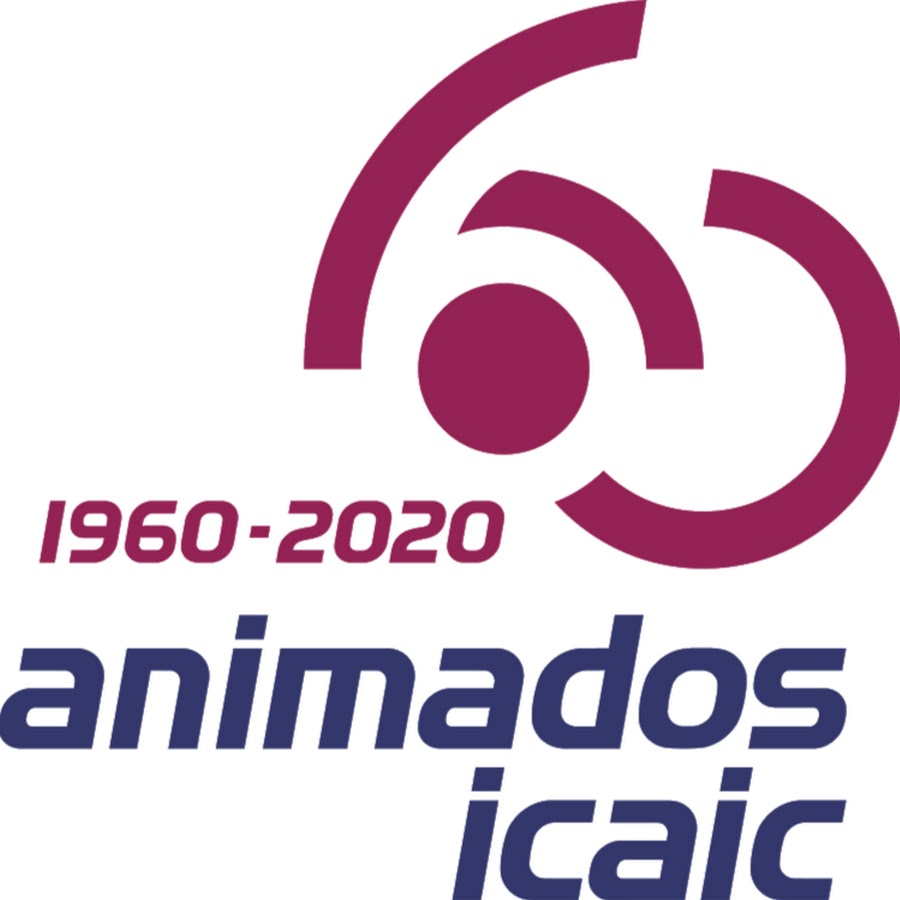 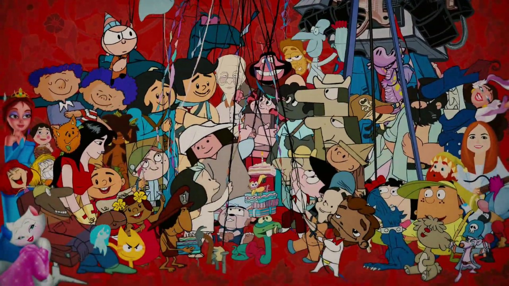 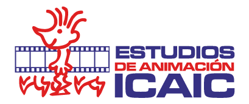Creación
La fecha de fundación oficial es 15 de enero de 1960. Es la institución líder en la producción de animados en el país, que inciden en la formación y desarrollo de valores estéticos, educativos y morales. Pertenece al Instituto Cubano del Arte e Industrias Cinematográficos (ICAIC), principal productora del cine en Cuba
Historia
Inicialmente se llamaron Departamento de Dibujos Animados del ICAIC y su sede esta ubicada en la misma sede del ICAIC, posteriormente en 1989 pasan a llamarse Estudios de Películas de Animación ICAIC. En el año 2000 tras el fortalecimiento del movimiento cultural cubano, cambia su nombre por el actual: Estudio de Animación del ICAIC y la sede es la actual
Fundadores
Jesús de Armas
Hernán Henriquez
Eduardo Muñoz Bachs
José (Pepe) Reyes
Tulio Raggi
Santiago Alvarez
Julio Garcia Espinosa
Manual Lamar
Lucas de la Guardia
Gisela Gonzalez
Paco Prats
Algunos Animados Destacados
Vampiros en la Habana
La película trata de una conspiración por parte de las dos bandas organizadas de vampiro ("Capa Nostra" de EUA y "Grupo Vampiro" en Europa) por apoderarse de una formula que le permite resistir el sol. Es un largometraje animado creado por Juan Padrón
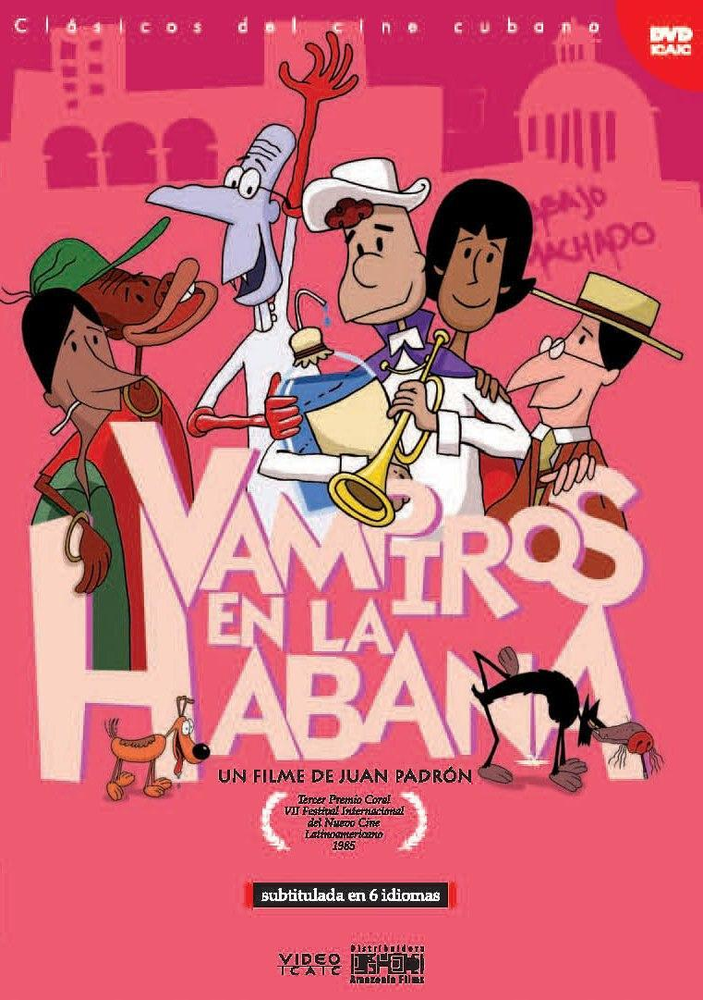Matojo
Es una serie de dibujos animados cubanos creados por Manuel Lamar Cuervo (Lillo) y producida por el ICAIC. Es uno de los personajes infantiles cubanos que saltó de la historieta al cine de animación. Hace su aparición en las páginas de Pa’lante durante los años 60 y posteriormente en la revista Zunzún.
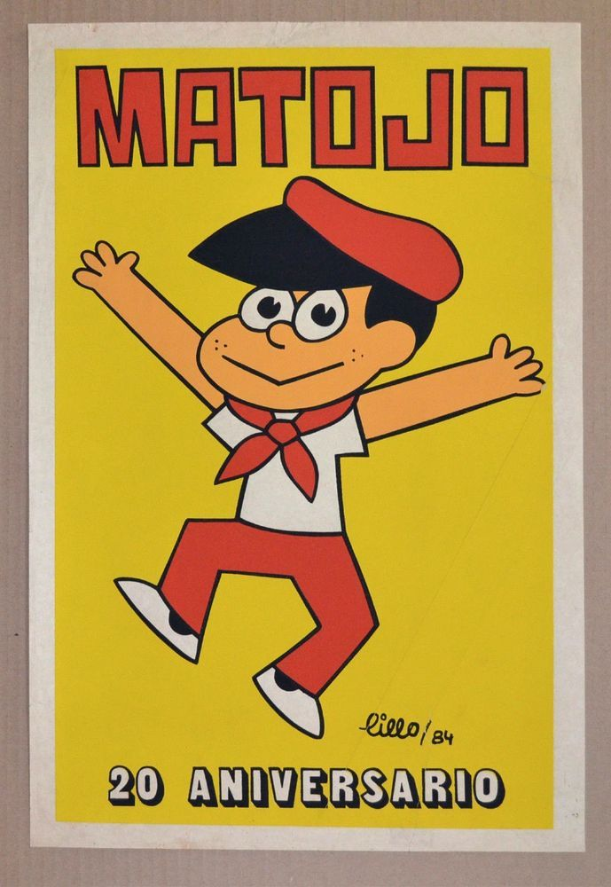El Negrito Cimarrón
Establecido por el artista cubano Tulio Raggi, cuenta la historia de un niño esclavo que se revela y hace de las montañas su refugio para hacerle bromas a los colonizadores que solían explotarlo y liberar a sus hermanos esclavos. Se ha llegado a decir que es una alusión que define el carácter emancipador y rebelde de los cubanos a través de los siglos.
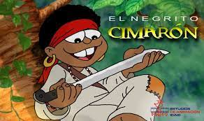Guaso y Carburo
Un perro que tiene por mascota a otro perro luchan por controlar a varios ratones malechores, que lo mismo pueden ser piratas que ladrones. Este animado fue creado por el humorista Luis Castillo y formó parte de un grupo más grande de animales llamados los Quemarrisas.
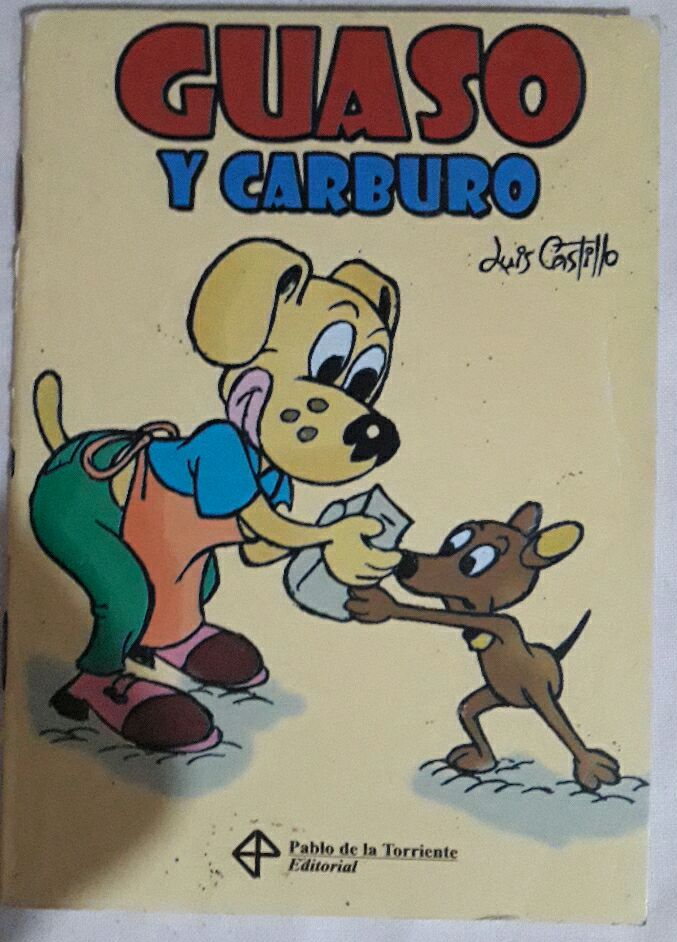Fernanda
Es una serie de dibujos animados cubanos creados por Mario Rivas y producida por el ICAIC. Es uno de los personajes infantiles cubanos que saltó de la historieta al cine de animación. Hace su aparición en el cine el 20 de octubre de 2013.
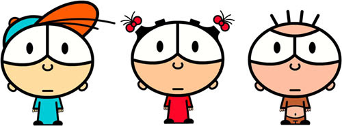Chuncha
Es el más popular personaje identificativo de los cederistas cubanos, creado por el caricaturista, ilustrador, historietista y guionista Gaspar González.
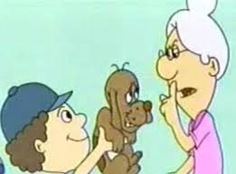Elpidio Valdez
Es un personaje de dibujos animados e historieta, protagonista de una serie de largometrajes, cortometrajes y tiras del mismo nombre. Fue creado en 1970 por el dibujante y cineasta cubano Juan Padrón.
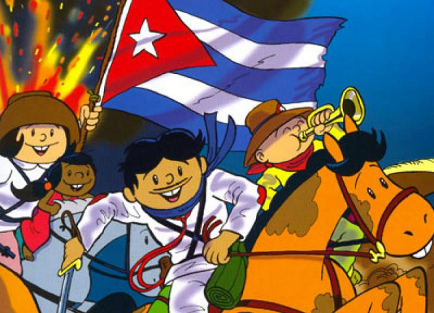Filminutos
Son piezas de audiovisuales de un minuto de duracion. Es un formato que se usa usualmente en festivales o muestras audiovisuales que buscan promover la creacion de contenido con todo tipo de cámaras
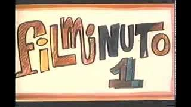